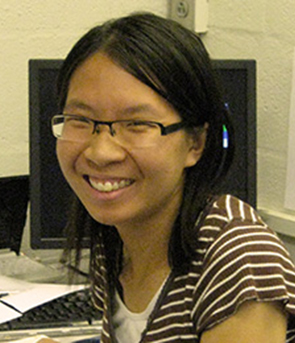

Meredith Wilson, PhD

Yvette Wong, PhD
Winners of the Saul Winegrad Award for Outstanding Dissertation
April 2015
Congratulations to Meredith Wilson, Ph.D. and Yvette Wong, Ph.D.!
Congratulations to Meredith Wilson, Ph.D. and Yvette Wong, Ph.D. from Erika Holzbaur’s lab for winning Saul Winegrad Awards for Outstanding Dissertations! Meredith won this year's Cell and Molecular Biology Graduate Group Saul Winegrad Award for Outstanding Dissertation! Yvette won the Saul Winegrad Award in the Neurosciences.
The Saul Winegrad Award for Outstanding Dissertation recognizes a dissertation of outstanding quality that makes a significant contribution to biomedical science. The award was created in 1995 in honor of the first Biomedical Graduate Studies (BGS) director, our very own Dr. Saul Winegrad. Meredith won her award for her dissertation entitled "Microtubule Motors Drive Nuclear Dynamics and Positioning in Developing Skeletal Muscle Cells”. She is now doing postdoctoral research with Steven Farber, Ph.D. at the Carnegie Institution in Baltimore, Maryland. Yvette won her award for her dissertation entitled “Defective Autophagy in Neurodegeneration: Novel Roles for Huntingtin and Optineurin in Regulating Autophagosome Dynamics”. Yvette plans to start postdoctoral work at Northwestern University shortly.
A real shout out and congratulations as well to Erika Holzbaur, Ph.D. for her excellent mentoring. Meredith and Yvette represent the third and fourth winners of this Award from The Holzbaur lab! Meng-meng Fu, Ph.D. was a Neuroscience Graduate Group student in her lab who won the Winegrad Award last year. She is now a postdoc at Stanford with Ben Barres, MD, PhD. Clare Waterman, Ph.D. was Erika's first graduate student. She won the award in 1995 and is now a Distinguished Investigator at NIH.
All are invited for the awards presentation! Please attend and celebrate these outstanding accomplishments!
BGS Commencement Ceremony
Monday, May 19, 2015, 1:30 - 2:30 pm, BRB II/III Auditorium
Reception 12:30-1:30 pm, BRB II/III Lobby